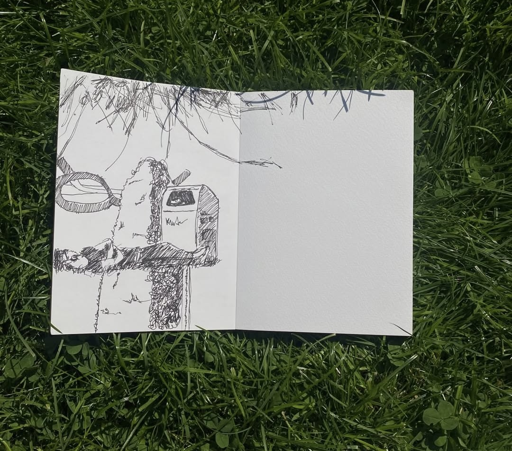

sketches outside
Photos / collected reference
an open sketchbook on the grass. loose pen lines, an ordinary moment i wanted to keep.
the story

Tags:
From my collection
Photos / collected reference
an open sketchbook on the grass. loose pen lines, an ordinary moment i wanted to keep.

Tags:
From my collection